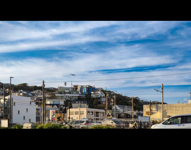
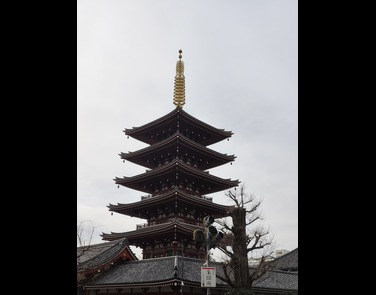

blog single post



Kawagoe
Often referred to as “Little Edo,” Kawagoe is a historic city located in Saitama Prefecture, just a short distance from Tokyo. The city is famous for preserving the atmosphere of Japan’s Edo period through its traditional warehouses, narrow streets, and centuries-old architecture. One of Kawagoe’s most recognizable landmarks is the iconic Bell Tower, which has become a symbol of the city’s rich cultural heritage. Visitors can explore Kashiya Yokocho, also known as Candy Alley, where numerous shops sell traditional Japanese sweets and snacks. Combining history, culture, and local cuisine, Kawagoe offers travelers a unique opportunity to experience the charm of old Japan while remaining close to the modern capital.
Asakusa
Asakusa is one of Tokyo’s oldest and most culturally significant districts, offering visitors a fascinating mix of traditional and modern Japan. The area is best known for Senso-ji Temple, Tokyo’s oldest temple and one of the city’s most visited landmarks. Leading to the temple is Nakamise Street, a bustling shopping area filled with local food stalls, souvenir shops, and traditional crafts. Asakusa’s historic atmosphere, combined with views of modern landmarks such as Tokyo Skytree, creates a unique contrast between Japan’s past and present. Whether visitors are interested in history, culture, shopping, or local cuisine, Asakusa provides an authentic and memorable experience in the heart of Tokyo.
Kamakura
Kamakura is a beautiful coastal city in Kanagawa Prefecture that served as Japan’s political center during the Kamakura period. Today, it is one of the country’s most popular tourist destinations because of its historical significance and natural beauty. The city is home to many ancient temples and shrines, including the famous Great Buddha, a massive bronze statue that attracts visitors from around the world. Surrounded by mountains and the sea, Kamakura offers breathtaking scenery throughout the year, especially during the cherry blossom and autumn seasons. With its blend of history, spirituality, and stunning landscapes, Kamakura provides visitors with an unforgettable glimpse into Japan’s cultural heritage.